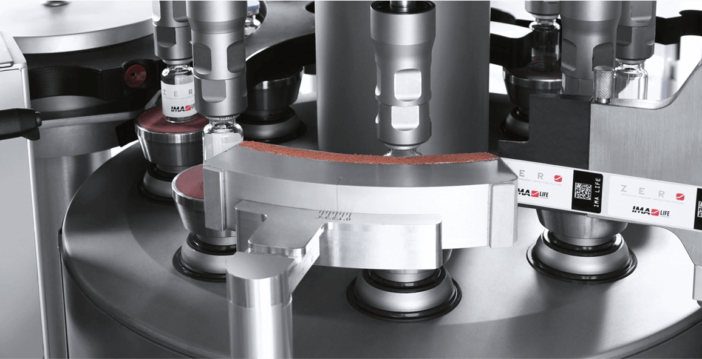
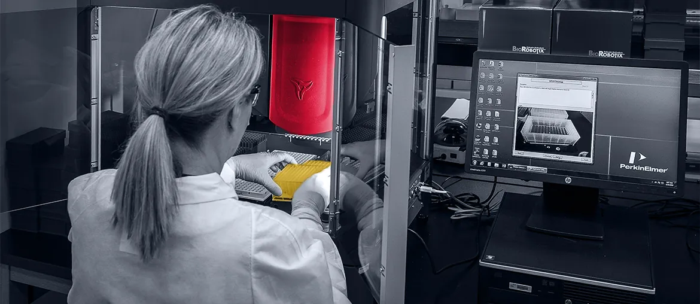

What we noticed
The QA role links batch release to deviations, change controls, and environmental monitoring. Map one live release path, then mark every handoff, owner, and missing evidence risk.
Prepared for Jason Hartman
August is scaling sterile injectable work from development through commercial manufacturing. The pressure point now looks like quality evidence, release readiness, and system handoffs.
Saw the Product Quality Assurance Manager role around batch disposition, AQL, and Quality-On-The-Floor. Here is how we would help the digital layer keep pace.

The role signals that August is tightening product QA while manufacturing grows. Batch disposition, deviations, change controls, and environmental monitoring all need fast review. The hard part is not only on-site quality work. It is the eQMS/LIMS trail that proves each lot is ready. If that trail stays manual, release meetings slow down and audit prep gets heavier. August's own manufacturing page also names automated visual inspection, labeling, packaging, and serialization.
The QA role links batch release to deviations, change controls, and environmental monitoring. Map one live release path, then mark every handoff, owner, and missing evidence risk.
Your site highlights automated visual inspection and serialization. Build a small exception report around inspection evidence, labels, and release blockers before wider automation.
Trace one batch from manufacturing closeout to QA disposition, including eQMS, LIMS, labels, deviations, and owner handoffs.
Turn blockers into URS items, risk notes, test cases, and a short plan your QA manager can own.
Build read-only checks for missing evidence, late deviations, and inspection exceptions without changing validated source systems.
Deliver traceability notes, test proof, role access review, and a simple release-readiness view for operations leaders.

Elinext supported a CFR-compliant clinical trials SaaS platform with QA and long-term regulated software work.
Read case study
Elinext refactored lab service modules for a platform used by labs, with HIPAA and HL7 compliance needs.
Read case studyWe can review one release workflow and return a clear pilot plan.
Talk to Elinext